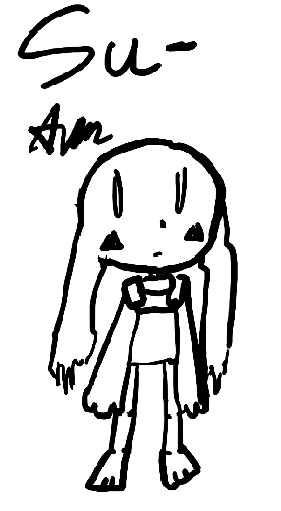
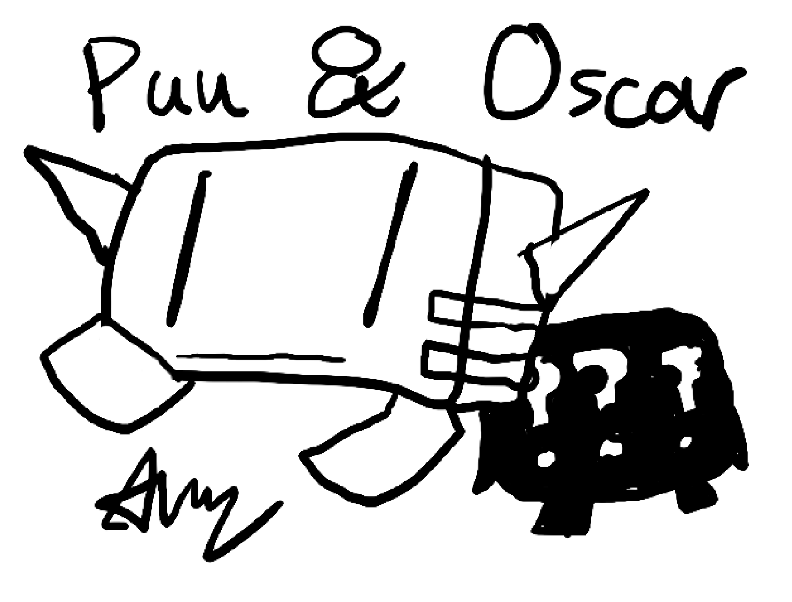
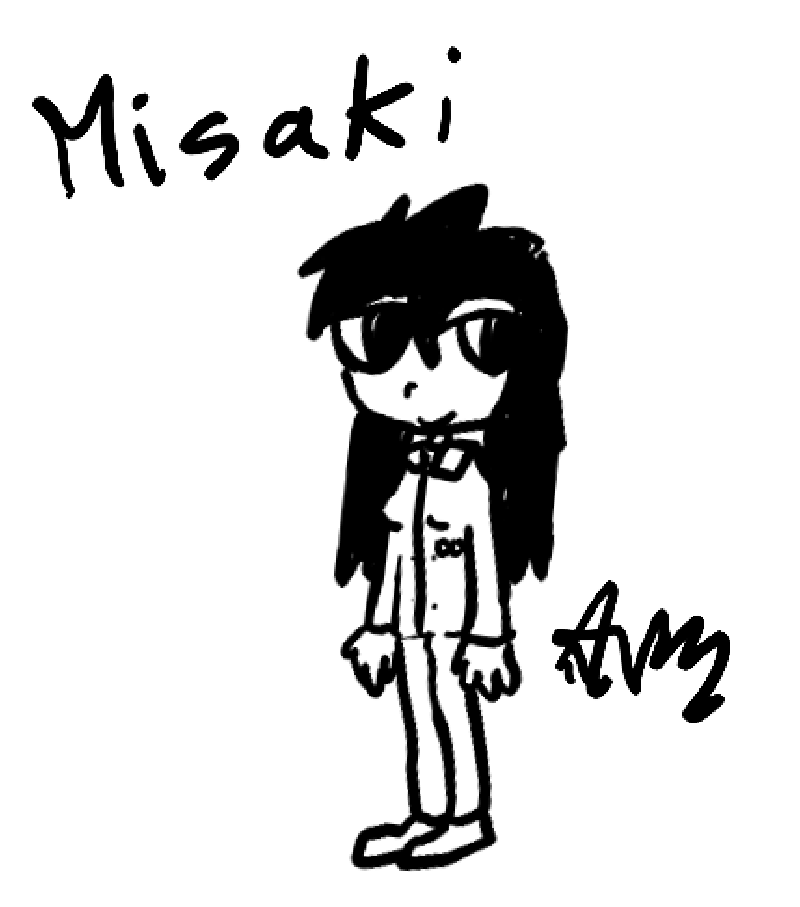

Cave Story: The Desolate

Curly Brace (protagonist) is a robot built by a doctor that was sent on a mission to save humanity from being conquered by soap creatures ("soaps") on a floating island. Curly Brace has amnesia, so its goal is to recover its memory and complete its mission.
Su- is a mimiga, which is a rabbit-like species that lives on the island. Unlike the other mimiga, Su- dislikes her cavernous home and believes in a better future than sustaining flowers to eat and surviving in the caves. She wants to escape the caves and prove everyone wrong, because her colony believes she is stupid and naive. Her current goal is to build a rocket and fly through a hole at the top of the Central.
Puu (main antagonist) is a large soap that seeks to lead a soap army to take over the island and conquer what is beyond it. Like most soaps, Puu eats mimigas, but to an eccentric degree, taking an uncomforting amount of pride in his work. Puu can't do it all alone though, so with his best friend Oscar (also a soap, secondary antagonist), they work together to stop anything in their way, with the strength of Puu, and the intellect of Oscar.
Misaki is a human girl who came with her father (the doctor) to locate and retreive Curly Brace, since once the robot had gotten dementia, it had already been a year since it was deployed. Misaki got seperated and lost from her father, and eventually trapped by the mimigas in the Central. Can Curly Brace save Misaki and come closer to recovering their memory?